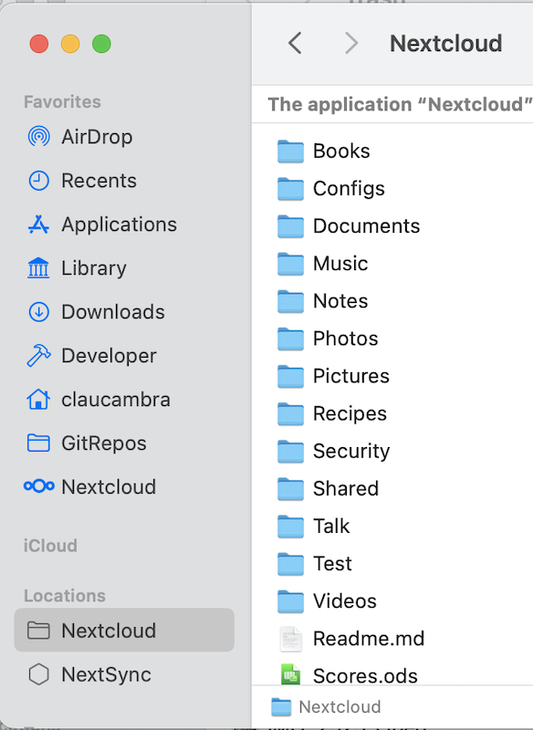
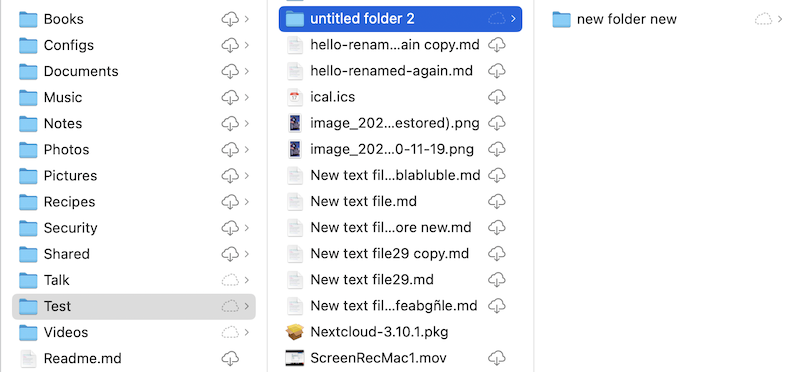

Cliente para ficheiros virtuais de macOS
A sincronización baseada en ficheiros virtuais para usuarios de escritorio NextCloud xa está dispoñíbel en macOS.
A diferenza de Windows, a compatibilidade con ficheiros virtuais en macOS é fornecido por unha versión de cliente separada. Isto permítenos manter a mellor experiencia posíbel para os ficheiros sincronizados ao xeito clásico, incluída a integración do estado de sincronización e as accións do menú contextual, para os usuarios que queiran seguir usando este método de sincronización. Do mesmo xeito que o noso cliente de sincronización clásico, o cliente de ficheiros virtuais de macOS é publicado xunto co cliente de escritorio para Windows e Linux, e beneficiarase de actualizacións regulares de erros e actualizacións que melloran a experiencia do usuario.
Funcionalidades compatíbeis
Retención e desaloxamento local por ficheiro
Desaloxamento intelixente da copia local
Integración con Spotlight
Vista previa de ficheiros dentro de Finder para ficheiros virtuais
Compatibilidade cos formatos específicos de Apple como paquetes de aplicacións e paquetes iWork (Pages, Numbers, Keynote).
Compatibilidade co bloqueo de ficheiros remotos
Compatibilidade con «Edición local»
Compartir ficheiros con outros usuarios
Sincronización automática de cambios remotos
Máis!
Nota
Para mellorar a detección de cambios remotos, recomendamos activar a aplicación notify_push no servidor NextCloud. Esta aplicación notificará ao cliente de escritorio os cambios no servidor en canto sucedan, reducindo o tempo que leva o cliente para detectar cambios. Isto tamén eliminará a necesidade de que o cliente de escritorio pescude continuamente o servidor para os cambios.
Instalación e configuración inicial
O cliente de ficheiros virtuais distribúese como un paquete de instaladores que se asemella ao cliente de sincronización clásico de macOS. O cliente de escritorio pódese instalar seguindo os pasos presentados polo instalador.
O cliente de escritorio de ficheiros virtuais é intercambiábel co cliente de escritorio de sincronización clásico. Isto significa que as súas contas e configuracións existentes transferiranse a este cliente e viceversa, se algunha vez decide volver ao cliente de sincronización clásico. Isto inclúe calquera cartafol de sincronización estándar preexistente, xa que o cliente de ficheiros virtuais tamén admite sincronización clásica.
Nota
Por mor de limitacións técnicas en macOS, non podemos fornecer integración en Finder tanto para os cartafoles de sincronización clásica como para os cartafoles de sincronización de ficheiros virtuais. Os cartafoles de sincronización clásica no cliente de ficheiros virtuais non terán integracións de Finder como iconas de estado de sincronización ou accións do menú contextual.
Todas as contas existentes ou recentemente configuradas terán permitidos os ficheiros virtuais automaticamente. En macOS, os ficheiros virtuais de cada conta viven baixo o seu propio dominio, separados de calquera cartafol de sincronización clásica preexistente. Estes dominios pódense atopar no grupo «Localizacións» na barra lateral do Finder.
Ao acceder por primeira vez a un destes dominios, o cliente de escritorio solicitará información sobre ficheiros remotos ao servidor. Esta primeira sincronización pode levar algún tempo dependendo da cantidade de ficheiros aloxados no servidor.
Integración con Finder
O cliente de ficheiros virtuais ten distintas integracións de Finder que lle permiten integrarse máis profundamente e de xeito máis nativo co navegador de ficheiros macOS que o cliente de sincronización clásico.
Indicadores de estado da sincronización
Do mesmo xeito que o cliente de sincronización clásico, o cliente de ficheiros virtuais amosa iconas a rente dos ficheiros virtuais que indican cal é o seu estado.
Nube con frecha: o elemento ou os seus fillos é virtual e está dispoñíbel para a súa conservación local
Silueta de nube: o elemento está parcialmente dispoñíbel localmente
Sen icona: o elemento está dispoñíbel sen conexión
Accións do menú contextual
Premer con Control, premer cos dous dedos ou premer co botón dereito sobre un elemento do Finder fornecerá o menú contextual, no que pode atopar varias entradas fornecidas polo cliente de ficheiros virtuais que lle permiten empregar algunhas das funcionalidades compatíbeis con NextCloud. Entre elas inclúense:
Bloqueo de ficheiros (se o servidor o admite)

Compartir ficheiros (se o servidor o admite)
Configuración
Os axustes relacionados con ficheiros virtuais pódense axustar por conta a través da xanela de axustes do cliente de escritorio de NextCloud.

A sección de ficheiros virtuais fornece unha serie de opcións relevantes para a interacción con ficheiros virtuais:
Activar/desactivar ficheiros virtuais para a conta de destino
Activar/desactivar a sincronización rápida
Xestionar o uso de almacenamento local e desaloxar as copias locais
Forzar o dominio de ficheiros virtuais a comprobar se hai actualizacións